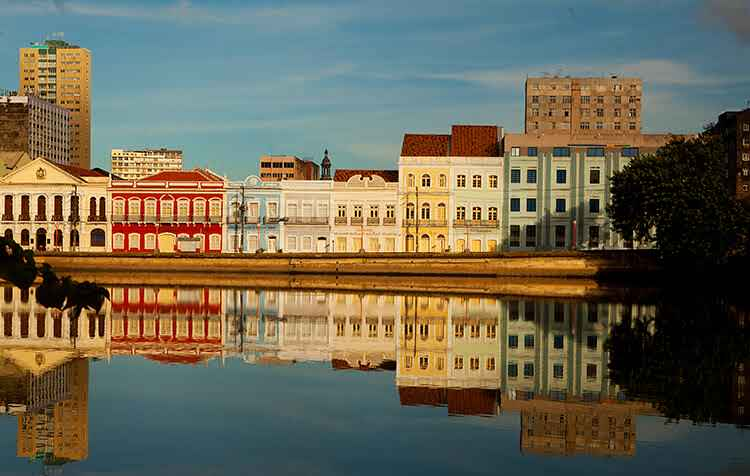
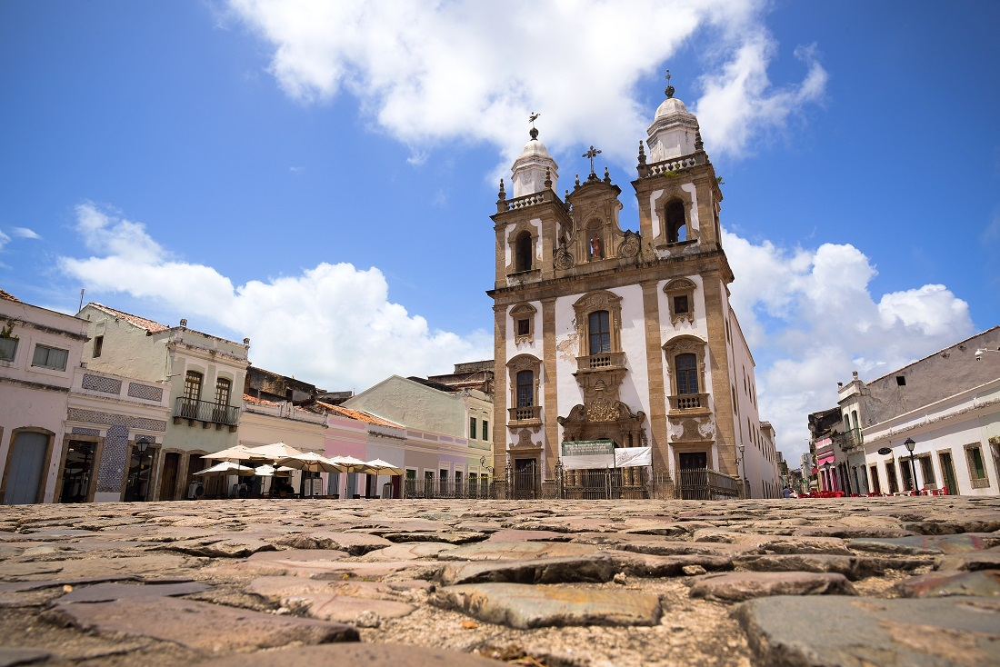
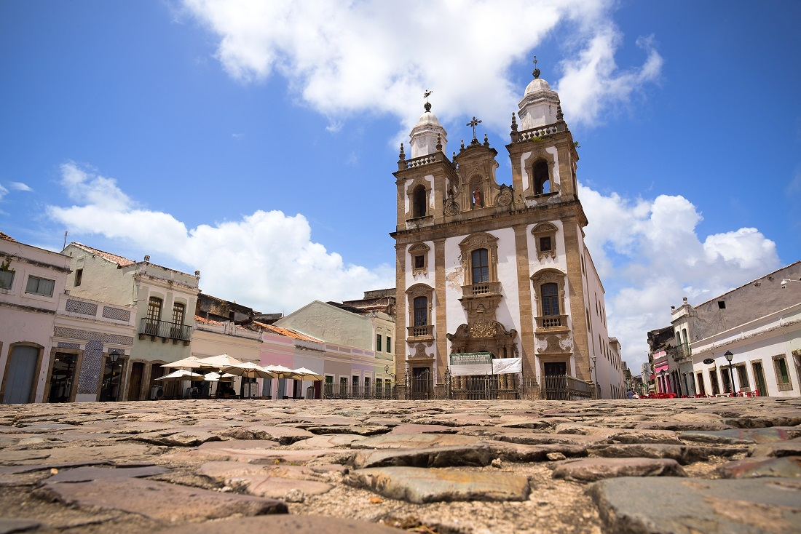

RECIFE E SEUS PONTOS TURÍSTICOS
Sobre a cidade:
Recife é uma cidade localizada na região nordeste do Brasil, sendo a capital do estado de Pernambuco. Conhecida como a "Veneza Brasileira" devido aos seus rios e pontes, a cidade possui uma história rica e uma cultura diversificada.
Fundada no século XVI pelos colonizadores portugueses, Recife desempenhou um papel importante na história do Brasil. Foi palco de eventos marcantes, como a invasão holandesa em 1630, que deixou uma significativa influência na arquitetura e tradições locais.
Recife é um caldeirão cultural, resultado da miscigenação de etnias e tradições. Sua população é conhecida pela hospitalidade e alegria, refletidas em festas populares, como o Carnaval de Recife e Olinda, que atraem milhares de visitantes todos os anos.
Pontos turísticos:

 
